Cameroon Touristic Sites
Mount Cameroon
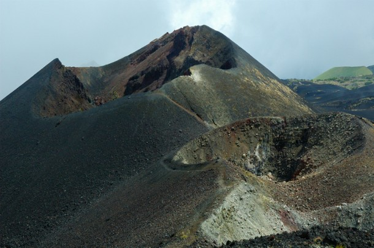 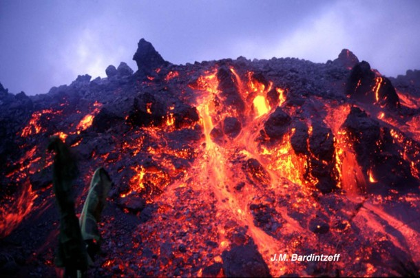Mount Cameroon is the highest mountain in West and Central Africa, rising to about 4,095 meters (13,435 feet) above sea level. It is located in the Southwest Region of Cameroon, near the towns of Buea and Limbe. Also known locally as “Mongo ma Ndem”, meaning "Mountain of Greatness" in the Bakweri language, it dominates the landscape and coastline. It forms part of the Cameroon Volcanic Line, a chain of volcanic mountains stretching from the Atlantic coast into the interior of Central Africa.
Mount Cameroon is an active volcano and is considered one of the most active on the African continent. It has erupted more than 20 times in recorded history, with major eruptions occurring in 1999, 2000, and 2012. These eruptions often produce lava flows that threaten nearby communities, but the people living around the mountain have learned to coexist with its unpredictable nature. Despite the risks, the mountain remains an important landmark for science, tourism, and local belief systems.
The mountain's environment is rich and diverse, with tropical forests at the base, savannah and grasslands further up, and alpine vegetation near the summit. This range in altitude creates a variety of ecosystems, making it a hotspot for biodiversity. Mount Cameroon National Park was established to protect its unique flora and fauna, including rare plant species and animals like monkeys, birds, and insects. Conservation efforts also support sustainable tourism and community development.
Mount Cameroon holds great cultural and spiritual significance for local ethnic groups, particularly the Bakweri people. It is seen as a sacred place inhabited by ancestral spirits. Traditional rituals are sometimes performed to appease the mountain, especially during times of volcanic activity. These cultural beliefs continue to play an important role in the way the mountain is respected and used by nearby communities.
One of the most famous events associated with the mountain is the Mount Cameroon Race of Hope, an international athletic competition held annually in Buea. Athletes from around the world and local runners compete to reach the summit and return,a challenging race covering nearly 40 kilometers. The race symbolizes strength, endurance, and national pride, and draws attention to the region's beauty and resilience.
Despite its natural and cultural importance, Mount Cameroon faces environmental challenges, including deforestation, climate change, and population pressure. However, it continues to attract researchers, tourists, and nature lovers, while serving as a powerful symbol of Cameroon's natural heritage.
New Kings Museum in foumban
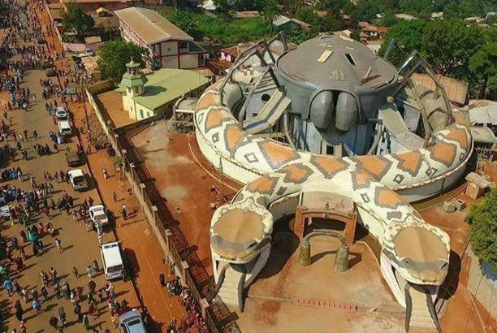 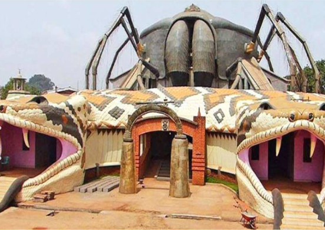 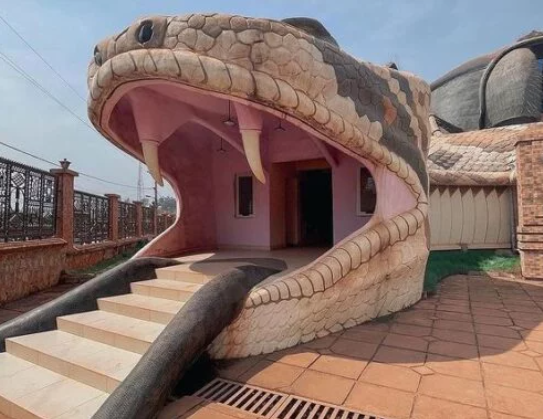The new Bamoun Kings Museum in Foumban, inaugurated on April 13, 2024, is a major cultural landmark built to celebrate and preserve the heritage of one of sub-Saharan Africa's oldest kingdoms. The museum covers about 5,000 square meters and houses over 12,500 historical and artistic objects, including royal regalia, weapons, musical instruments, masks, manuscripts, and items previously kept in the royal palace. Its architecture is rich with symbolism: the entrance is shaped like a two-headed snake, topped with a spider, and includes double gongs—all emblematic symbols of the Bamoun kingdom. The design reflects a deliberate effort to express the identity, power, and traditions of the Bamouns through built form. Inside, there are three main exhibition rooms, plus conference and event halls capable of accommodating around 300 people.
The museum not only serves as a repository of Bamoun culture, but also aims to represent a wider panorama of Cameroonian heritage: it includes artefacts and cultural themes spanning regions such as the forested south, the Centre, East, and even northern Cameroon. Initiated by the late Sultan Ibrahim Mbombo Njoya around 2013 (because the old palace spaces were becoming too cramped), the project was completed under the current Sultan Nabil Mbombo Njoya. Beyond exhibiting artefacts, it's intended as a place for education, cultural tourism, and promoting national identity—and for local artisans and communities to see their crafts and history recognized on a grand scale.
The Slave Port Of Bimbia
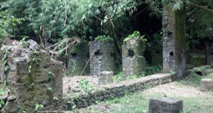 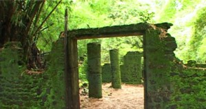Bimbia is a coastal village located in the Southwest Region of Cameroon, near the city of Limbe. It was once a major slave-trading port during the transatlantic slave trade between the 17th and 19th centuries. Enslaved Africans, captured from various inland areas such as the Grassfields, Bamileke, and Tikar regions, were brought to Bimbia where they were detained, branded, and then loaded onto ships bound for the Americas. From here, they were transported to the Caribbean, North and South America, and other parts of the world. Bimbia served as a key point of departure in what is often called the "Door of No Return" for those who were enslaved.
Today, the remains of the slave trade infrastructure still exist in Bimbia, including old stone prison cells, chains, branding tools, and slave embarkation points along the coast. These serve as powerful reminders of the suffering and inhumanity that took place during that period. The site is surrounded by dense tropical forest and mangroves, which helped preserve its features but also made it less accessible and less well-known than other major slave ports in Africa.
In recent years, efforts have been made to preserve and promote Bimbia as a national heritage site. It was officially recognized as a National Cultural Heritage Site in 2017 and later added to Cameroon's tentative list for UNESCO World Heritage status. The government, historians, and local communities have discussed plans to develop the area into a memorial and educational center, with infrastructure improvements, a museum, and spaces for remembrance and cultural education.
However, these efforts have also faced challenges and controversy. Local residents and traditional leaders have expressed concerns about the preservation of the site's authenticity. Some have protested development proposals that they fear could commercialize or disrespect the memory of the enslaved. They emphasize that any projects should be handled with care and cultural sensitivity, respecting the historical trauma tied to Bimbia.
Although less known than sites like Gorée Island in Senegal or Elmina Castle in Ghana, Bimbia is one of the most significant reminders of Cameroon's role in the transatlantic slave trade. It holds deep emotional and historical importance, not only for Cameroon but for the broader African diaspora, and efforts continue to ensure its stories are preserved and remembered.
National Park of Waza
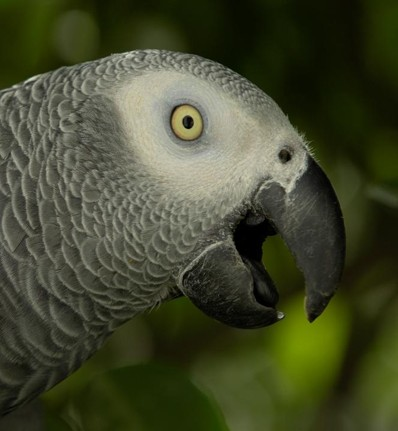 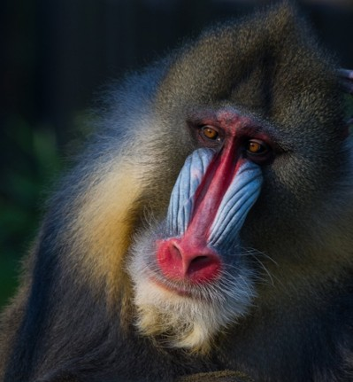 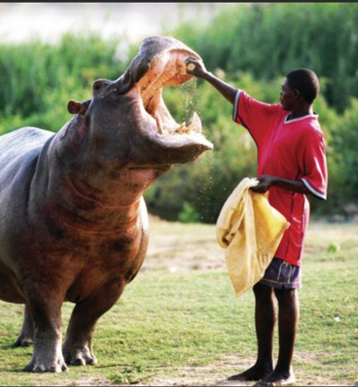 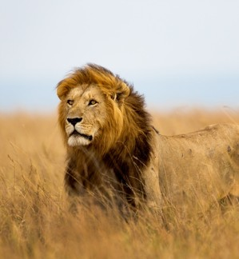Waza National Park is one of Cameroon's most important wildlife reserves, known for its rich biodiversity and wide variety of wild animal species. Located in the Far North Region of the country, the park lies in a transition zone between the Sahel and Sudan savanna. This unique position creates a mix of habitats—grasslands, acacia savanna, floodplains, and dry forests—which support a diverse population of animals.
One of the park's most iconic species is the African lion. Waza was once considered a stronghold for lions in West and Central Africa, although their numbers have declined in recent years due to poaching and habitat loss. Elephants are also found in the park, though they are fewer than in the past. Other large mammals include giraffes, buffaloes, roan antelopes, kob, waterbucks, hartebeests, and reedbucks. These herbivores graze across the savannas and attract predators such as lions and spotted hyenas.
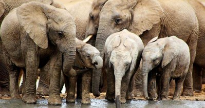 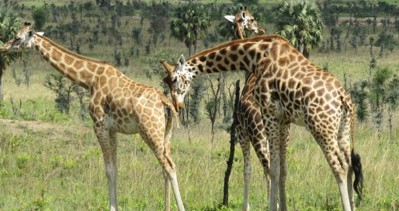 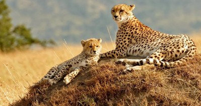
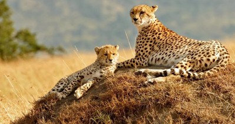
The park is also home to smaller mammals such as warthogs, baboons, vervet monkeys, and jackals. During the dry season, many of these animals gather around remaining water sources, making it an ideal time for wildlife observation. The presence of both dry land and floodplain ecosystems allows for a range of animal behaviors and survival strategies adapted to seasonal changes.
In addition to mammals, Waza is especially known for its rich birdlife. Over 370 species of birds have been recorded in the park, making it a popular destination for birdwatchers. Large birds such as ostriches, saddle-billed storks, herons, eagles, and vultures are commonly seen. Migratory birds from Europe and northern Africa also use Waza as a seasonal stopover or wintering ground, especially in the wet season when food and water are more abundant.
While Waza's wildlife remains impressive, many species face threats from poaching, climate change, and loss of natural habitat. Conservation efforts are ongoing to protect the animal populations and restore the delicate balance of the ecosystem. These efforts include anti-poaching patrols, water management projects, and community engagement programs aimed at reducing human-wildlife conflict and promoting sustainable coexistence.
Benoue National park
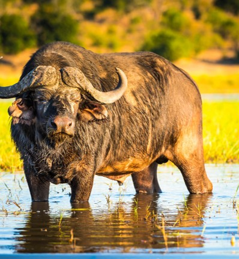 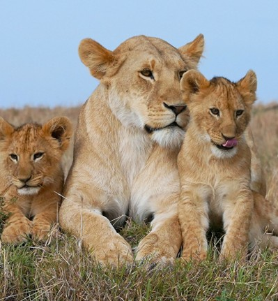Bénoué National Park is one of the oldest and most significant protected areas in Cameroon. Located in the North Region, between the towns of Garoua and Ngaoundéré, the park stretches over approximately 180,000 hectares. It was first established as a faunal reserve in 1932 and later became a national park in 1968. In 1981, it was designated a UNESCO Biosphere Reserve, recognizing its ecological importance and the need to balance conservation with sustainable human activity. The Bénoué River, which borders the park on the east, is a vital water source and supports a rich variety of life.
The park's landscape is a mix of rolling hills, rocky outcrops, and open savannah, combined with wooded grasslands, riparian forests, and seasonally flooded plains. This mixture of habitats reflects the park's location in a transitional ecological zone between the Sudano-Guinean and Sudanian savanna belts. The riverine zones provide crucial refuge for wildlife during the dry season, as well as supporting aquatic ecosystems.
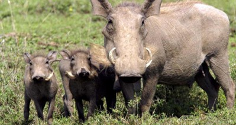 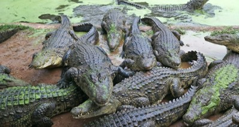 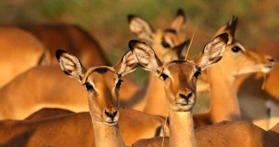Bénoué National Park is home to a wide variety of wildlife. Large mammals such as elephants, buffaloes, hippopotamuses, and lions roam the savannah. Other animals include warthogs, waterbucks, kob, western hartebeest, baboons, and the rare Lord Derby's eland, one of Africa's largest antelopes. The Bénoué River also supports crocodiles and large pods of hippos. The park is equally important for birdlife, with over 300 bird species recorded, including storks, bee-eaters, doves, herons, and eagles, making it a destination for birdwatchers.
Despite its protected status, Bénoué National Park faces significant conservation challenges. These include poaching, illegal logging, grazing by domestic animals, mining, and the expansion of agriculture into park lands. Some wildlife populations have declined due to these pressures, and the balance of the ecosystem is increasingly threatened. Seasonal changes in water levels, especially in the Bénoué River, also affect the park's plant and animal life.
Efforts are ongoing to protect and restore the park's ecological balance. Conservation initiatives include strengthening anti-poaching patrols, engaging local communities in sustainable resource management, and promoting environmental education. The park's Biosphere Reserve status encourages approaches that integrate human development with the protection of natural ecosystems.
Bénoué National Park has strong potential for eco-tourism, thanks to its diverse wildlife, scenic landscapes, and river access. Visitors can explore the park by road or boat, especially during the dry season, when animals are easier to observe near water sources. Although infrastructure is limited, the park remains one of Cameroon's top destinations for wildlife viewing and nature experiences.